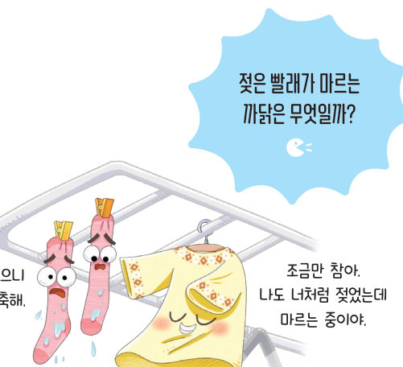
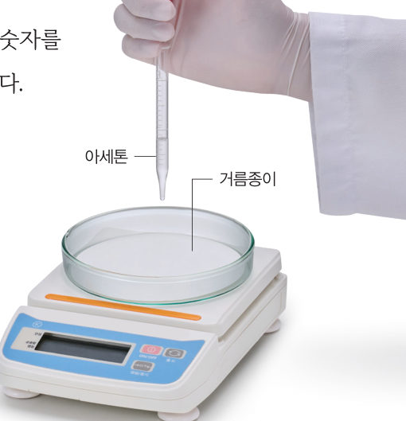
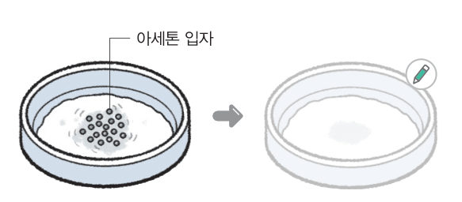
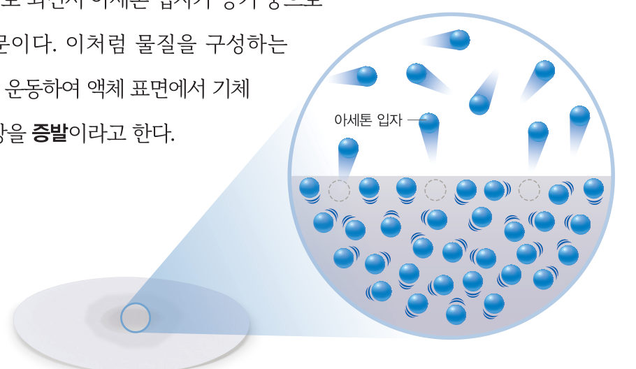
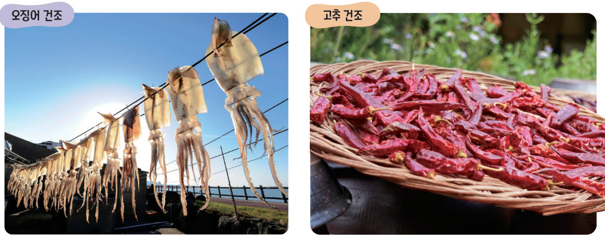
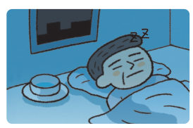

살아있는 교과서 · Ⅳ. 물질의 상태 변화 · 1. 물질을 구성하는 입자의 운동 · 02 118~120쪽
액체 표면에서 일어나는
액체 표면에서 일어나는
증발 현상
“물에 젖으니 너무 축축해.” “조금만 참아. 나도 너처럼 젖었는데 마르는 중이야.” 젖은 빨래가 마르거나 물걸레로 닦아 둔 교실 바닥이 마르는 것은 어떻게 일어날까? 가상 전자저울로 아세톤이 사라지는 모습을 측정해 보자.
🎯 이 단원을 배우면 — 증발 현상을 관찰하여 물질을 구성하는 입자가 운동하고 있음을 설명할 수 있다.
해 보기아세톤의 증발 현상 관찰하기 118쪽
증발 현상은 어떻게 일어날까?

준비물: 아세톤, 페트리 접시, 거름종이, 전자저울, 스포이트, 마스크, 보안경, 실험용 장갑
- 전자저울에 거름종이를 올린 페트리 접시를 놓고 영점을 맞춘다.
- 거름종이에 아세톤을 몇 방울 떨어뜨린 뒤 저울의 숫자를 읽고, 시간이 지남에 따라 저울의 숫자 변화를 관찰한다.
⚠️ 실험하는 동안 창문을 열어 환기가 되도록 하고, 아세톤을 흡입하지 않도록 주의한다. 아세톤을 다룰 때 마스크를 착용하고, 눈이나 피부에 닿지 않게 주의한다. 남은 물질은 지정한 곳에 모아 처리한다.
가상 실험가상 전자저울
액체와 방울 수를 고르고 [영점 맞추기] → [떨어뜨리기]를 눌러 보자. 저울의 숫자와 그래프가 시간에 따라 어떻게 변하는지, 오른쪽 입자 확대 창에서 액체 표면의 입자가 어떻게 되는지 관찰하자. (재생 속도: 화면 1초 = 실제 약 5초)
지난 시간0초
날아간 양0 %
1시간이 지남에 따라 저울의 숫자는 .
2세 액체를 같은 방울 수로 비교했을 때 빨리 증발하는 것부터 나열해 보자. (끌어서 옮기기)
- 물
- 아세톤
- 에탄올
3저울의 숫자가 변한 까닭을 입자 운동으로 설명해 보자. (입자 확대 창의 모형을 참고)

대체 탐구물과 아세톤의 증발 속도
윗접시저울의 양쪽 접시에 거름종이를 1장씩 올려놓고, 한쪽에는 물 4방울을, 다른 쪽에는 아세톤 6방울을 떨어뜨렸다. [시작]을 눌러 저울이 어떻게 되는지 관찰해 보자.
1처음 저울은 기울어지고, 시간이 지나면 기울어진다. 시간이 더 오래 지나면 저울은 .
2이 탐구에 대한 설명으로 옳지 않은 것은?
교과서증발 119쪽
아세톤을 떨어뜨린 거름종이가 점점 가벼워지는 것은 그림 4-3과 같이 액체 아세톤이 기체로 되면서 아세톤 입자가 공기 중으로 날아갔기 때문이다. 이처럼 물질을 구성하는 입자가 스스로 운동하여 액체 표면에서 기체로 변하는 현상을 증발이라고 한다.

우리는 생활에서 증발 현상을 유용하게 이용하기도 한다. 그림 4-4와 같이 오징어나 고추 등을 오래 보관하기 위해 말리는 것은 증발 현상을 이용한 경우이다.


밤에 자다가 깨었을 때 마시기 위해 잠자리의 머리맡에 준비해 두는 물을 ‘자리끼’라고 한다. 이것은 목마름을 해결해 주기도 하지만, 밤새 물이 증발하면서 방 안의 습도를 조절하는 역할도 한다.
스스로 확인하기118쪽 학습 목표를 달성했는지 확인해 보자 119쪽
1개념 확인 물질을 구성하는 입자가 스스로 운동하여 액체 표면에서 기체로 변하는 현상을 ( )(이)라고 한다.
2사고력 확산 현상과 증발 현상이 일어나는 공통된 까닭을 입자 운동과 관련하여 설명해 보자.
5분 테스트액체 표면에서 일어나는 증발 현상
1증발은 물질을 구성하는 입자가 스스로 하기 때문에 나타나는 현상이다. 손등에 바른 알코올이 사라지는 까닭은 알코올 입자가 중으로 날아가기 때문이다.
2옳은 것은 O, 옳지 않은 것은 X를 골라 보자.
| ⑥ 증발은 바람이 불 때만 일어나는 현상이다. | |
| ⑦ 풀잎에 맺힌 이슬이 사라지는 것도 증발 현상의 예에 해당한다. | |
| ⑧ (증발 이용) 오징어를 오래 보관하기 위해 말린다. | |
| ⑨ (증발 이용) 석고 방향제를 놓아 방 안을 향기롭게 한다. | |
| ⑩ (증발 이용) 염전에서 소금을 얻는다. |
스스로 정리하기증발 현상 · 첫 번째 블록 찾기 120쪽
2증발 현상
(1) 증발: 물질을 구성하는 입자가 스스로 하여 액체 표면에서 기체로 변하는 현상
(2) 아세톤을 떨어뜨린 거름종이가 점점 가벼워지는 까닭은 액체 아세톤이 기체로 되면서 아세톤 입자가 중으로 날아갔기 때문이다.
(3) 우리 생활에서 이용하는 현상: 오징어나 고추 등을 오래 보관하기 위해 말린다.
(2) 아세톤을 떨어뜨린 거름종이가 점점 가벼워지는 까닭은 액체 아세톤이 기체로 되면서 아세톤 입자가 중으로 날아갔기 때문이다.
(3) 우리 생활에서 이용하는 현상: 오징어나 고추 등을 오래 보관하기 위해 말린다.
🧩 첫 번째 블록 찾기
젖은 흙을 두 개의 항아리 사이에 넣는 까닭은 무엇일까?
힌트 조각 1 (117쪽): 항아리 표면에 있는 작은 구멍을 통해 확산 현상이 잘 일어난다.
힌트 조각 2 (119쪽): 두 개의 항아리 사이에 넣은 젖은 흙에서는 ( ) 현상이 일어난다.
힌트 조각 2 (119쪽): 두 개의 항아리 사이에 넣은 젖은 흙에서는 ( ) 현상이 일어난다.
제출학생 정보 · 제출하기
모든 활동을 마친 뒤 제출하면 전체가 한 번에 채점되고 피드백이 나타나요. 답안은 선생님 스프레드시트(중1 탭)에 기록돼요.